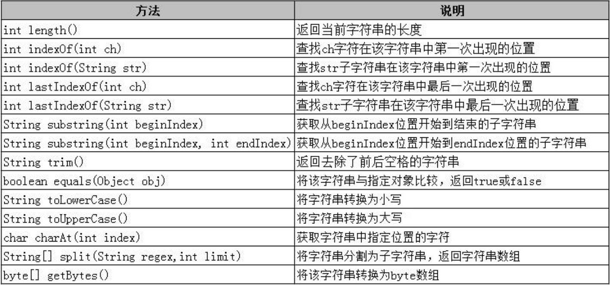

String 是一个特殊的对象
一. 创建字符串String对象
三种方法：
String s1 = "hello";
String s2 = new String(); // 创建一个空字符串对象
String s3 = new String("hello");
s1 和 s3 的区别:
s1 在内存中有一个对象("hello"),
s3 在内存中有两个对象(new + "hello")
二. 字符串特点
- 字符串是一个特殊的对象
- 字符串一旦被初始化,就不可以被改变
三. String 字符串常用方法

字符串==比较的是内存地址,
且String 类重写了equals,使equals比较的是字符串对象的值
1. 获取
- 字符串的长度
- 根据位置获得位置上的某个字母 (char charAt(int) )
- 根据字符获得该字符在字符串中的位置(int indexOf)
2. 判断
- 字符串中是否包含某一子串
两种方法: boolean contains(str)和indexOf
indexOf(str)既可以判断是否包含,也可以返回字符串的位置 - 字符中是否为空(isEmpty())
- 字符串是否以指定的内容开头(boolean startsWith())
- 字符串是否以指定的内容结尾(boolean endsWith())
- 判断字符串内容是否相同 -- 重写了 Object 的 equals 方法, -- boolean equals(str)
- 判断内容是否相同,并忽略大小写 -- boolean equalsIgnoreCase()
3. 转换
网络中传输字符串，是将字符串转为字节数组（二进制），接收后将字节数组还原成String。
- 字符串 <---> 字符数组
- 字符串 <---> 字节数组
- 基本数据类型 ---> 字符串
String.valueOf()
4. 切割和替换
替换:
replace(oldString,newString)
可以替换单个字符, 也可以替换一个单词,replaceAll()可通过正则表达式进行替换. - 如果被替换的字符不存在, 则返回原字符串切割
split()-- 根据字符串中符号切割字符串subString(StartIndex, endIndex)取子串,第一位为0
5. 比较和除空格
大小写转换
toUpperCase()
toLowerCase()去除两端空格
term() -- 只去除两端空格, 不能去除字符串中间的空格对两个字符串进行自然顺序比较
s1.compareTo(s2),将两个字符串的ascall值相减, 如果结果为0, 说明两个字符串相等, 反之则不相等
6. 字符串练习
四. 三者区别
String StringBuffer StringBuilder
1. 主要区别
String 具有不可变性，StringBuilder 和 StringBufffer 可变(可存入多种类型).
JDK1.5出现一个StringBuilder,区别是 StringBuffer 是同步的(线程安全),StringBuilder是非同步(线程不安全,但速度快)
2. 容器的特点
当数据类型有多种, 需要反复操作字符串, 且最后要转回字符串时, 容器比数组方便
- 长度可变
- 可插入多种类型
- 最后可通过 toString() 转回 String
3. 常用方法
StringBuffer 是一个字符串容器, 可以对字符串进行增删改查
- StringBuffer append(int x);
- StringBuffer delete(int start, int end );
- StringBuffer insert(int index,String str);
- StringBuffer reverse();
推荐在单线程中使用StringBuilder(效率), 多线程使用StringBuffer(安全)